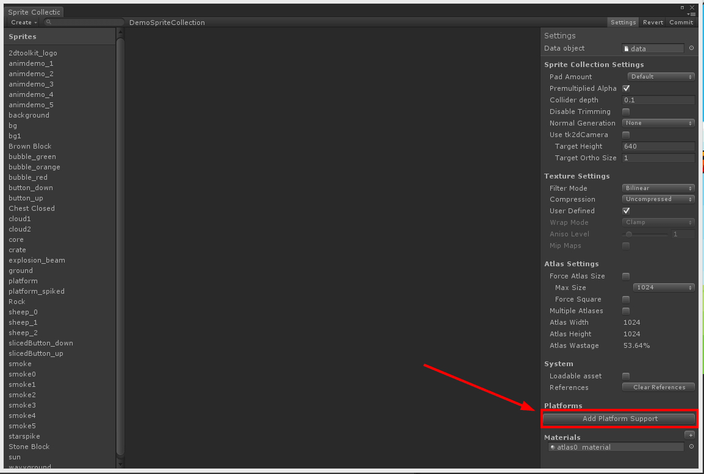
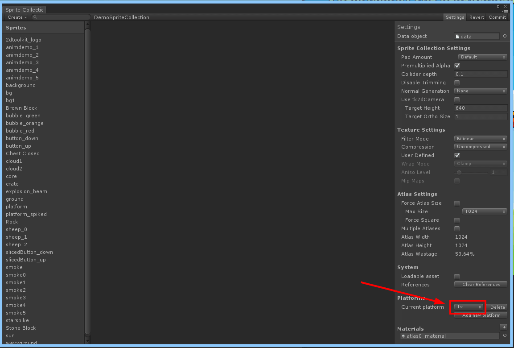

Documentation
Script Reference
Forum
Documentation
Script Reference
Forum
When building mobile projects, it is common to have 1x (SD) & 2x (HD) and sometimes even 4x assets. The platform specific sprite collections feature makes it really easy to support and manage these assets. The way the system works, you can work at one native platform and very quickly set up the additional data at a later point in time.
The system only handles sprite collections - it is possible to use platform specific fonts too, but they will need to be added to a sprite collection.
Set up your sprite collections with the lowest quality assets (1x) and use these sprite collections to set up the scene.
If you haven't done this before, you will need to add platform support. In the settings inspector of the sprite collection editor, click on "Add Platform Support". If this has already been set up on any sprite collection, this button will not be present.

Select the platform of the currently selected sprite collection. For example, if the current sprite collection has 1x assets, select 1x.

Click on "Add new platform", and select the platform you'd like to add. Make sure the textures / other platform specific files exists for this platform. Refer to Asset Paths for more information on how 2D Toolkit will look for platform specific assets.
Commit.
At game startup, before loading anything call tk2dSystem.CurrentPlatform = "2x"; or your platform of choice based on your game specific logic.
You can switch the currently active sprite collection in "2D Toolkit > Preferences". All platform specific sprite collections will switch in project & game view.
When looking for platform specific sprites and fonts, 2D Toolkit will attempt to search for each file as shown in the following examples:
Example 1 - when looking for a 2x texture.
Source: Assets/SpriteCollection/Textures/test.png
1: Assets/SpriteCollection/Textures/test@2x.png
2: Assets/SpriteCollection/Textures/2x/test.png
3: Assets/SpriteCollection/Textures/2x/test@2x.png
Example 2 - 2D Toolkit ignores @XXX on the source texture. This has the same search order as above.
Source: Assets/SpriteCollection/Textures/test@1x.png
1: Assets/SpriteCollection/Textures/test@2x.png
2: Assets/SpriteCollection/Textures/2x/test.png
3: Assets/SpriteCollection/Textures/2x/test@2x.png
The same rules apply to fonts. 2D Toolkit will now parse your bmfont to find the appropriate texture, so you won't need to rename the texture. If in doubt, export from your font package using the full @platform filename instead of renaming it once it has been exported.
There isn't a dedicated sprite collection directory, so keep each platform specific texture relative to the original one following the rules above. This can be anywhere in your project folder.
If you'd like to customize the rules further - the code that handles all of this is in tk2dSpriteCollectionPlatformBuilder.cs.
If you start with high resolution assets, and add a low quality override - be careful about center / middle sprite alignment. 2D Toolkit will automatically align the center of a sprite to a pixel boundary to avoid quality loss / missing rows of pixels. Make sure your high resolution textures are always multiple of the unit.
Always run "2D Toolkit > Rebuild Index" after merging any changes from source control which could have changed any platform data. This will ensure your runtime will have the required assets.
2D Toolkit will automatically rescale your sprites so they remain the same size in screen space. This means no additional changes will be required in the scene.
Platform specific sprite collections do not have any references to materials or textures or any other platform specific data. If you started off with a sprite collection which didn't have platform data, you should resave all your scenes to ensure that no surplus material/texture data is left over bloating runtime memory.
If the requested platform doesn't exist on a sprite collection, the system will default to the first available one.
Avoid platform specific atlases on spanned sprite collections at all costs. Its much cheaper and more reliable to do it yourself.